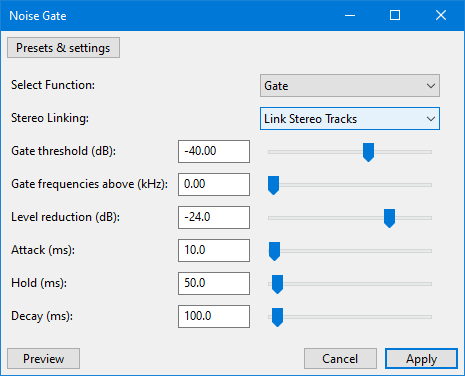
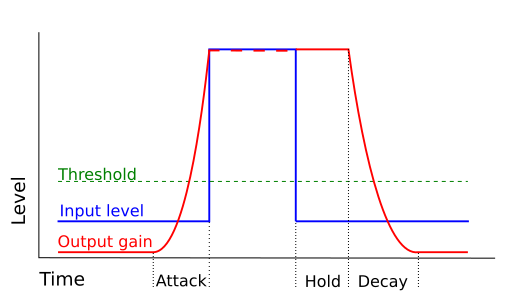
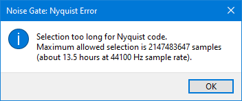

Noise Gate
Use the Noise Gate to reduce the level of sound below a specified threshold level.
A noise gate is a kind of "dynamics processor" that allows audio above a specified threshold level to pass through unaffected (gate "open"), and stops or reduces sounds below the threshold level (gate "closed").
Noise Gates may be used to cut the level of residual noise between sections of a recording. While this is essentially a very simple effect, this Noise Gate has a number of features and settings that allow it to be both effective and unobtrusive and well suited to most types of audio.
Note carefully that when you apply an effect to a time-stretched clip the changed speed of the clip will be automatically rendered.
|
- Accessed by:
- 
Select Function
Select whether you want to apply the noise gate, or analyze the noise level:
- Gate: Apply the noise gate.
- Analyze Noise Level: Analyze the level of the selected audio. All other controls are ignored when this option is selected.
When analyzing the noise level, ensure that the start of the selection lies within a region of noise only. The measurement is taken from the first half second of the selection. The analysis displays the measured level, and suggests a setting for the Gate threshold setting.
Stereo Linking
When Link Stereo Tracks is selected (the default), the gate will work on the channels of a stereo track as a pair and change the level of both channels by the same amount when the level in both channels fall below the threshold. This option is generally recommended, but will leave low level noise un-gated if there is sound above the threshold in the other channel.
When Don't Link Stereo is selected, the gate will adjust the amplitude separately for the left and right channels of a stereo track. This may be preferred when left and right channels have unrelated sounds, such as perhaps two sides of a conversation. For conventional stereo tracks it may cause a peculiar sensation of sound moving across the stereo field.
Gate threshold
When the audio level drops below this threshold the gate will 'close' and the output level will be reduced. When the audio level rises above this threshold the gate will 'open' and the output will return to the same level as the input.
Gate frequencies above
This slider control has a range up to 10 kHz (default = 0).
- When set to zero, the gate acts on all of the audio.
- When set above zero, the gate acts on audio frequencies above the set kHz level, and lower frequencies pass through the gate unaffected.
This option may be useful in cases where there is substantial high frequency hiss, but relatively little noise at lower frequencies.
Level reduction
Some noise gates refer to this control as "Range" or "Ratio".
This slider control determines the amount of attenuation (negative amplification) that is applied when the gate is "closed" (below the threshold level). At -100 dB, the gate stops the sound completely when closed, unless the "Gate frequencies above" is set higher than zero. If "Gate frequencies above" is higher than zero, the frequencies above the specified kHz level are stopped completely when the amplitude level is below the threshold.
Lower (more negative) setting attenuate the signal more, resulting in less noise passing through the closed gate, but may also produce noticeable pumping of the audio as the gate opens and closes. See the section on Suggested Workflow below.
Attack
This setting controls how quickly the gate opens once the signal level exceeds the Gate threshold level.
Unlike most hardware noise gates, this effect is able to look ahead and begin opening the gate so that the gate is open by the time that the threshold has been exceeded. This feature helps to avoid clipping the start of sounds even with relatively long Attack settings.
- At the minimum (1 ms) the gate will fully open almost instantly as the audio level crosses the threshold.
- At the maximum (1000 ms), the gate will begin to slowly open (fade-in) 1 second before the sound level exceeds the threshold.
Hold
This is the length of time that the gate remains open after the signal has dropped below the Gate threshold, before the gate starts to close.
- When gating low frequency sounds, Hold should normally be set long enough to prevent the gate from closing between the waveform's peaks.
- When gating percussive sounds such as a snare drum, Hold may be set long enough to allow the natural decay of the sound before the gate closes.
Decay
Some noise gates refer to this as "Release time".
This is the complement of Attack. Whereas Attack sets the time taken for the gate to open, Decay sets the time taken for the gate to close. The gate will begin to close after the signal has dropped below the Gate threshold and the Hold time (if any) has been used. Longer Decay times close the gate more gradually.
- 
Suggested Workflow
- Analyze the noise level
- Test the gate on a short selection with the Level Reduction set to -100 dB
- Adjust the Gate threshold if necessary and retest.
- Adjust the Level reduction slider and test. For the most 'transparent' results avoid setting the Level reduction any lower than absolutely necessary.
- When the settings are correct, apply the effect to the entire song.
Limitations
Due to Nyquist restrictions the maximum amount of audio that can be acted upon with Noise Gate is 2,137,483,647 samples, which is about 13.5 hours of stereo at 44,100 Hz default rate.
If you try with a selection longer than that you will get the following error message:
- 
| the workaround for longer audio is to split it into smaller selections for Noise Gate to work on. |
Links
|< Index of Effects, Generators and Analyzers